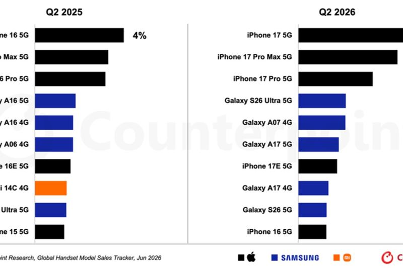

Apple · 27. August 2026
iPhone 17 wird weltweit meistverkauftes Smartphone

Im zweiten Quartal 2026 war das iPhone 17 laut Counterpoint Research mit 6 Prozent der weltweiten Verkäufe das meistverkaufte Smartphone, vor iPhone 17 Pro Max, iPhone 17 Pro und Samsung Galaxy S26 Ultra 5G. Apple legte bei Stückzahlen trotz Marktrückgang um 5 Prozent zu; das Basismodell lockt mit 120-Hertz-Display und 256 GB Basisspeicher.